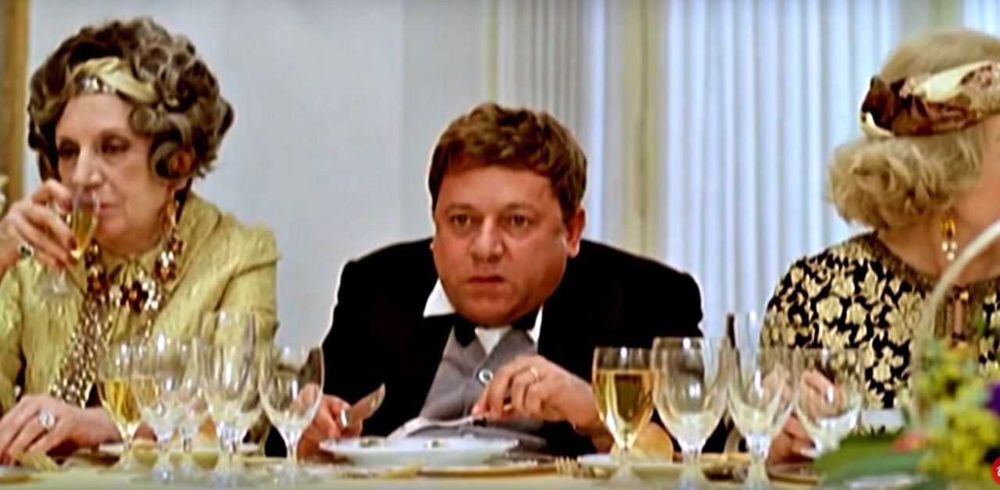

 Netiquette deriva da "Network" (in inglese rete), e da "étiquette" (in francese buona educazione). E' l'insieme di regole che disciplinano il comportamento di un utente di Internet nel rapportarsi agli altri utenti attraverso risorse come forum, blog, reti sociali, e-mail, ecc...In pratica a cosa serve?- Serve a farci usare una buona qualità di comunicazione, riduce gli equivoci e i problemi di intesa in uno spazio enorme, il "web", in cui non entriamo fisicamente in comunicazione con gli altri.- Serve a imparare a rispettare tutti in un ambiente potenzialmente a rischio di equivoci, poichè non ci guardiamo negli occhi nè sentiamo il tono di voce. Interagiamo con persone che sono lontane, che non conosciamo bene o che non conosciamo affatto.In breve, la netiquette serve a porre le basi per una buona comunicazione nonostante lo schermo e la distanza. E per questo diventa essenziale anche nel lavoro.
Queste regole anche se non obbligatorie possono aiutare a mantenere un atteggiamento educato e civile in una chat con vari utenti. Se non vengono rispettate costantemente possono sfociare in vari reati come la violazione della privacy.
Questo termine definisce la protezione sui diritti d'autore, vieta agli altri utenti di impossessarsi del lavoro fatto e tutela le opere dell' ingegno di carattere creativo riguardanti la letteratura, la musica, il cinema, i programmi per elaboratore e le banche dati. Questa tutela si attua iscrivendosi alla Società Italiana degli Autori e degli Editori (SIAE). La violazione può essere fatta attraverso il plagio, l'acquisizione di meriti su un progetto senza averlo fatto, oppure attraverso la riproduzione delle opere a fini commerciali. La contravvenzione del copyright è sanzionata pesantemente con multe fino a € 15.000 o con la detenzione da 3 a 6 mesi.
Col termine privacy si indica il diritto alla riservatezza delle informazioni personali e della propria vita privata. E' uno strumento quindi utile a tutelare la sfera privata dell' individuo.Parlando della privacy in rete:

Valgono anche in questo caso alcune regole per la scrittura in rete. Tra queste le più importanti sono:

I consigli riguardanti i contenuti delle comunicazioni su internet possono essere riassunti in alcuni punti: